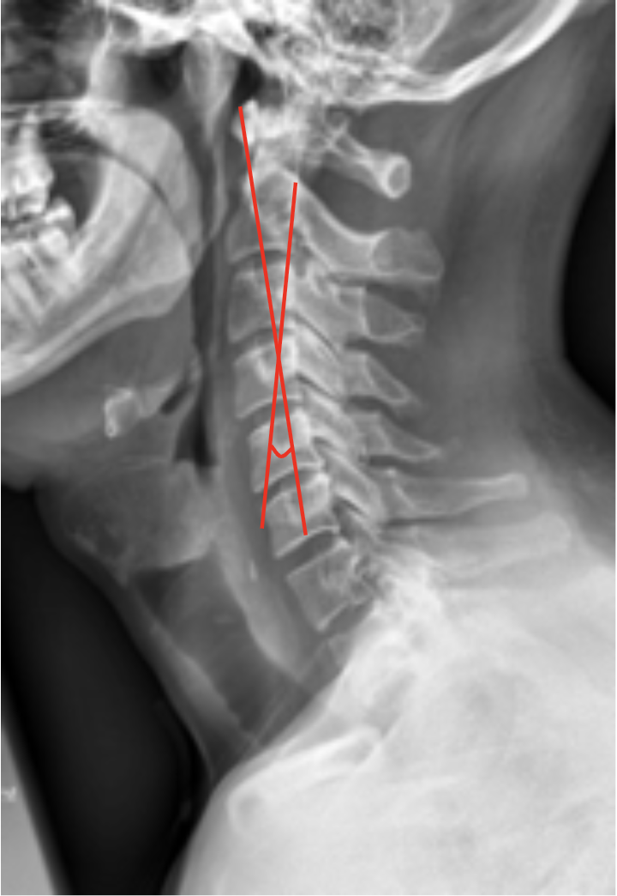

1) Description of Measurement
C2 Tilt quantifies the inclination of the axis (C2 vertebra) relative to the vertical axis of the cervical spine and a line drawn parallel to the posterior cortex of the odontoid and is an important parameter for assessing cervical sagittal alignment.
It provides insight into the orientation of the upper cervical spine, often used in conjunction with C2–C7 lordosis and cSVA (C2–C7 sagittal vertical axis) to evaluate cervical balance, especially in deformity correction or postoperative analysis.
A forward-tilting C2 body may reflect compensatory alignment in response to subaxial deformity or global sagittal imbalance.
2) Instructions to Measure
3) Normal vs. Pathologic Ranges
4) Important References
Divi SN, Bronson WH, Canseco JA, et al. How do C2 tilt and C2 slope correlate with patient reported outcomes in patients after anterior cervical discectomy and fusion? Spine J. 2021 Apr;21(4):578-585. doi: 10.1016/j.spinee.2020.10.033. Epub 2020 Nov 13.
Tang JA, Scheer JK, Smith JS, et al; ISSG. The impact of standing regional cervical sagittal alignment on outcomes in posterior cervical fusion surgery. Neurosurgery. 2012 Sep;71(3):662-9; discussion 669. doi: 10.1227/NEU.0b013e31826100c9.
Shen YW, Yang Y, Hong Y, et al. Association of Craniocervical Sagittal Alignment With the Outcomes of Cervical Disc Replacement. Global Spine J. 2024 Apr;14(3):846-855. doi: 10.1177/21925682221124531. Epub 2022 Aug 31.
Liu W, Rong Y, Chen J, Luo Y, Tang P, Zhou Z, Fan J, Cai W. Cervical sagittal alignment as a predictor of adjacent-level ossification development. J Pain Res. 2018 Jul 20;11:1359-1366. doi: 10.2147/JPR.S160472.
Scheer JK, Tang JA, Smith JS, et al; International Spine Study Group. Cervical spine alignment, sagittal deformity, and clinical implications: a review. J Neurosurg Spine. 2013 Aug;19(2):141-59. doi: 10.3171/2013.4.SPINE12838. Epub 2013 Jun 14.
5) Other info....
C2 tilt correlates with global cervical sagittal imbalance - higher values (more forward tilt) are linked to increased cSVA and higher Neck Disability Index (NDI) scores.
It directly influences chin-brow vertical angle (CBVA) and horizontal gaze maintenance.
In surgical planning, restoring physiological C2 tilt can help optimize global sagittal alignment and reduce postoperative compensatory mechanisms.
Consider evaluating C2 slope, T1 slope, and C2–C7 SVA together for comprehensive sagittal analysis.